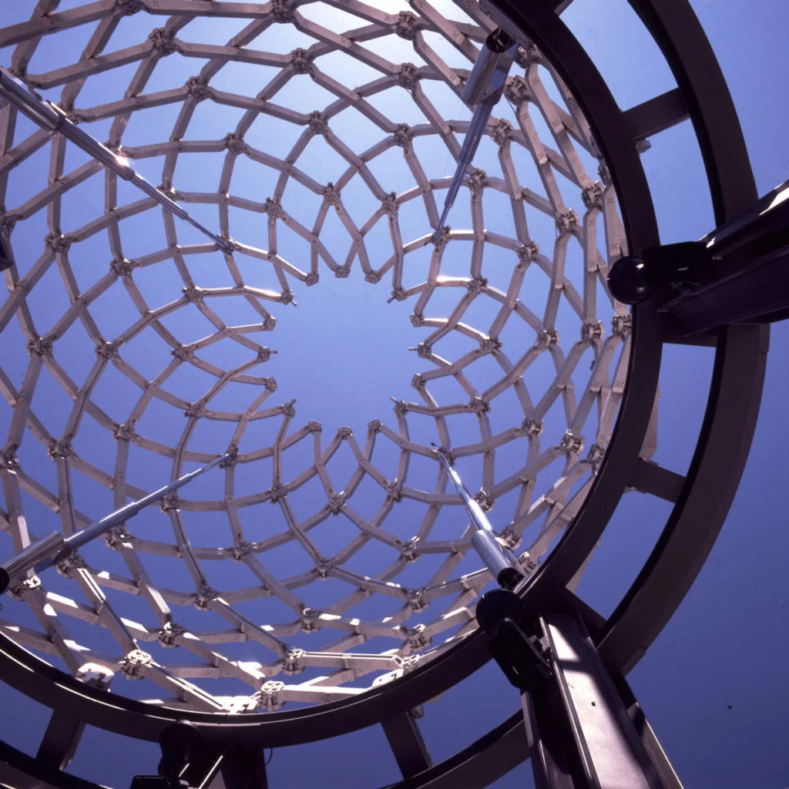
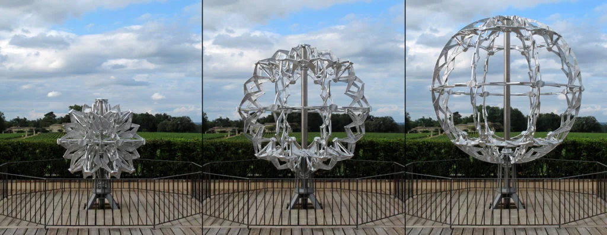
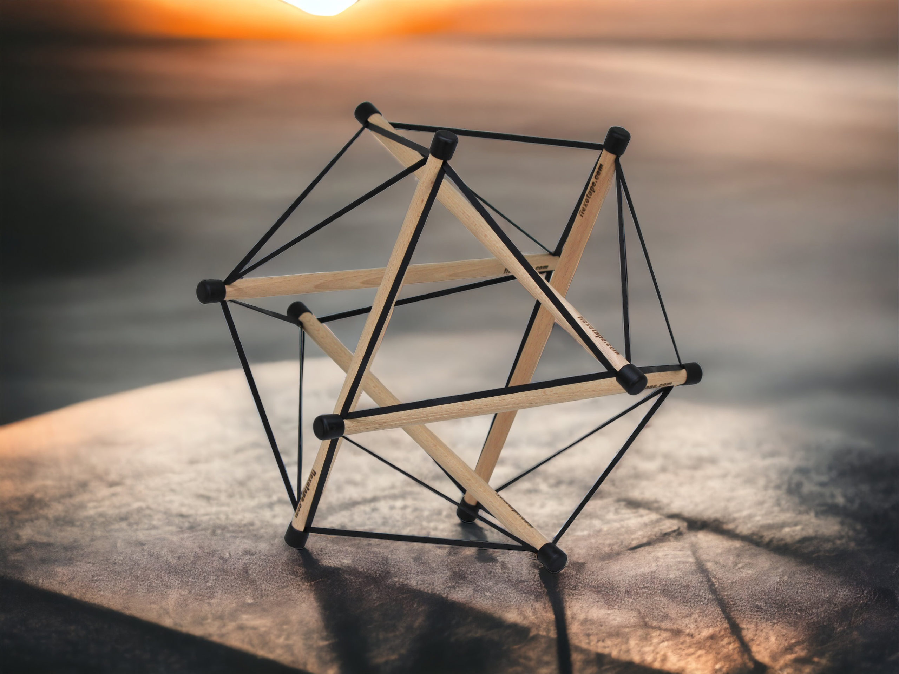
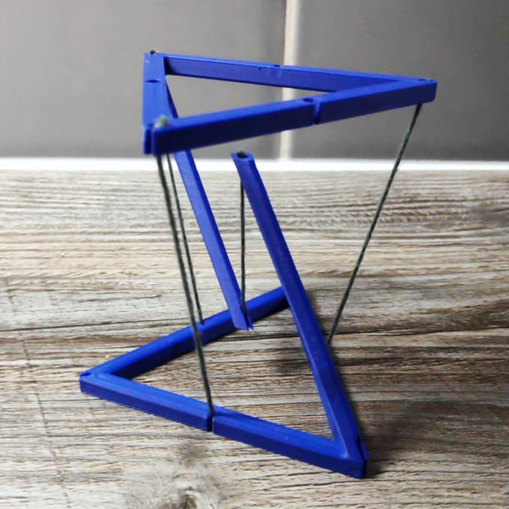
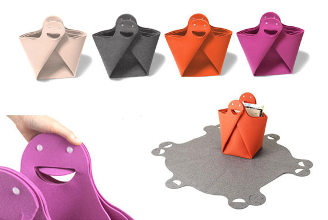
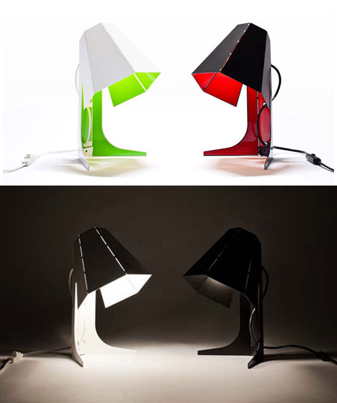
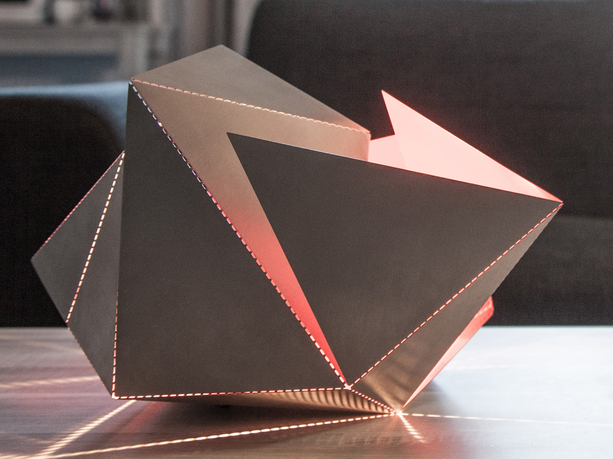
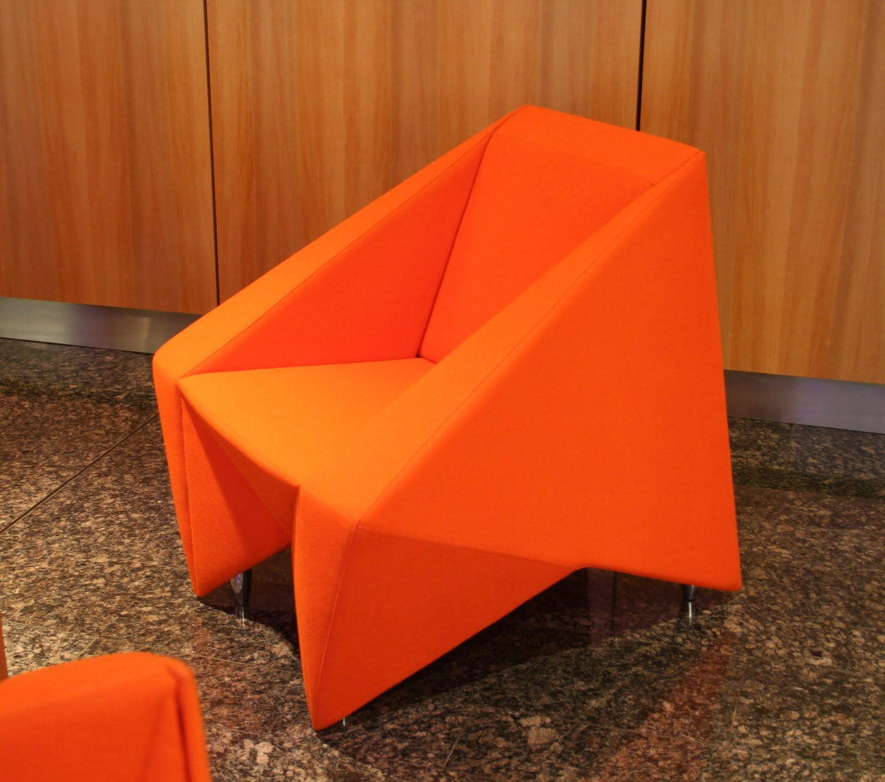

Day 1
About Me
Flexible Robots
Physics-Based Simulation
More Recent
Flexible Robot


Simulation
Video
Other Stuff
Bio-Inspired Robots
Feathered Drone
Digging in Granular Media
SoFi
Salamander-Inspired Robot
Squirrel Inspired Robot
Undulating Robot
Salto-Squirrel
Climbing Robot
Raptor-Inspired Drone w/ Morphing Wing
Sloth-Inspired Mechanisms
Jumping Bird
BioMechanics
Paleobionics
Paleo Biomechanics
Other Engineering
Morphing Drone
Paddling Mechanism
Salto
Insect-inspired Microrobots
Mechanisms
Deployable Structures


Hoberman
Moving Sculptures
Tensegrity Devices


Tensegrity Robots
Kiriform
Product Packaging
Origami-Inspiration



